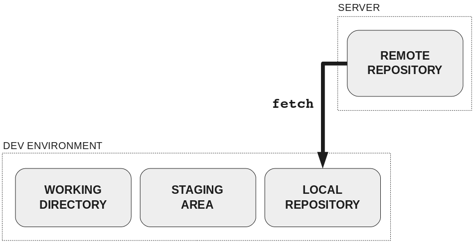
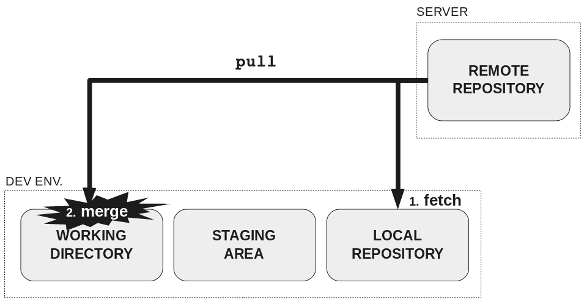

Быстрое объяснение
git pull — это, по сути, команда git fetch, после которой сразу же следует git merge.
Команда git fetch получает изменения с сервера и сохраняет их в каталог refs/remotes/. Это действие (fetch) не влияет на локальные ветки и текущие изменения, просто изменения с удаленного сервера скачиваются в директорию локального репозитария.
Локальный репозитарий - это структурированное хранилище изменений проекта. В нем хранятся копии изменений, которые получены с удаленного сервера, или производились локально и были закоммичены.
А что же делает команда git merge? Она вливает (применяет) все полученные новые изменения к текущей ветке, в которой происходит работа.
Подробное объяснение
Git fetch
Для получения данных из удалённых проектов, следует выполнить:
$ git fetch [имя удал. сервера]
Данная команда связывается с указанным удалённым проектом и забирает все те данные проекта, которых у вас ещё нет. После того как вы выполнили команду, у вас должны появиться ссылки на все ветки из этого удалённого проекта. Теперь эти ветки в любой момент могут быть просмотрены и с ними можно производить слияния.
Когда вы в начале работы над проектом делали клонирование репозитория, команда clone автоматически добавила удалённый репозиторий под именем origin. Таким образом, git fetch origin извлекает все наработки, отправленные (push) на этот сервер после того, как вы клонировали его (или получали новые изменения с помощью fetch). Как было сказано выше, команда fetch забирает данные в ваш локальный репозиторий, но не сливает их с какими-либо вашими наработками и не модифицирует то, над чем вы работаете в данный момент. Вам необходимо вручную слить этот код с вашим кодом в рабочей директории, когда вы будете готовы, и производится это с помощью команды git merge.
Возможно, более яснее станет, что делает git fetch, если посмотреть на эту картинку:

Git pull
Если у вас есть ветка, настроенная на отслеживание удалённой ветки, то вы можете использовать команду git pull. Она автоматически скачивает и затем вливает данные из удалённой ветки в вашу текущую ветку. Этот способ может для вас оказаться более простым или более удобным. К тому же по умолчанию команда git clone автоматически настраивает вашу локальную ветку master на отслеживание удалённой ветки master на сервере, с которого вы клонировали (подразумевается, что на удалённом сервере есть ветка master). Выполнение git pull, как правило, извлекает (fetch) данные с сервера, с которого вы изначально склонировали, и автоматически пытается слить (merge) их с кодом, над которым вы в данный момент работаете.
То есть, работа git pull состоит из двух стадий. Первая стадия - это то же самое что и git fetch, а вторая стадия - это мердж с кодом в рабочей директории. Вот так:
